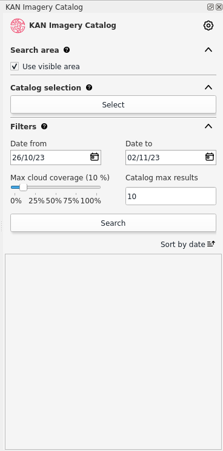
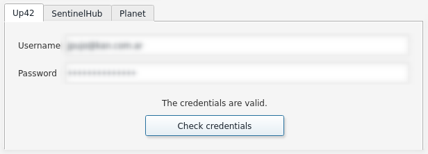
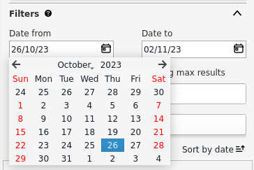
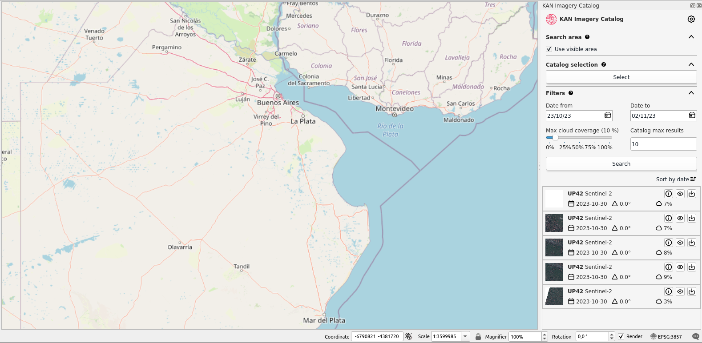
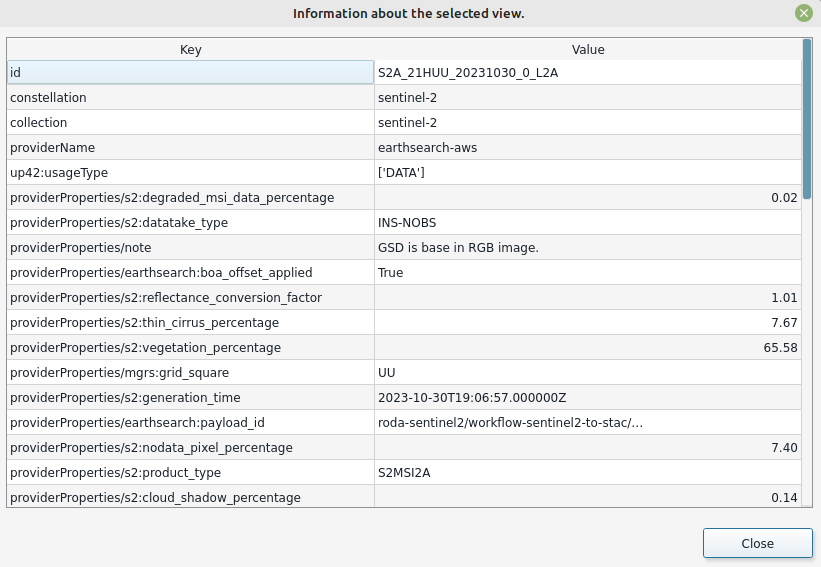
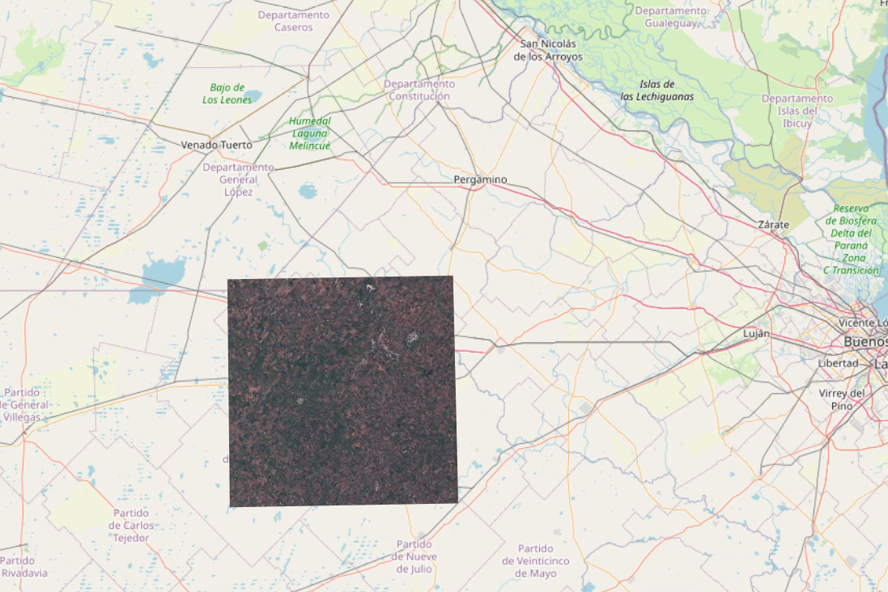

Plugin
Ao abrir o plugin Kan Imagery Catalog, ele aparecerá no lado direito da tela do QGIS com as seguintes seções:

- Configuração
- Área de Pesquisa
- Seleção de catálogo
- Filtros
- Listagem
Configuração
Para utilizar o plugin Kan Imagery Catalog, a primeira coisa a fazer é configurar as credenciais que serão usadas para se conectar a diferentes provedores de imagens.
Credenciais UP42
Neste ponto, vamos proceder à configuração das credenciais para UP42. Para continuar, você precisa de um nome de usuário e senha na plataforma do provedor. Para se cadastrar, você pode visitar https://console.up42.com/log-in.
Depois de habilitar seu usuário e carregar o primeiro projeto, você poderá acessar as informações necessárias para utilizar o plugin.

O plugin solicita as seguintes informações para se conectar ao provedor:
- Nome de usuário
- Senha
Note
Você pode encontrar essas informações no portal da UP42 > Projetos > Desenvolvedores.
Após carregar os dados necessários, você pode verificar as credenciais.

Se forem válidas, verá a mensagem "As credenciais são válidas."
Credenciais Sentinel Hub
Neste ponto, vamos proceder à configuração das credenciais para Sentinel Hub. Para continuar, você precisa de um nome de usuário e senha na plataforma do provedor. Para se cadastrar, você pode visitar as configurações de conta de sentinel-hub.
Depois de habilitar seu usuário, é necessário registrar um Cliente OAuth nas configurações da sua conta para acessar as informações necessárias para utilizar o plugin.

O plugin solicita as seguintes informações para se conectar ao provedor:
- Client ID
- Client secret
Tip
Siga a documentação de sentinel-hub.
Após carregar os dados necessários, você pode verificar as credenciais.

Se forem válidas, você verá a mensagem "As credenciais são válidas."
Credenciais Microsoft
O catálogo de dados do Microsoft Planetary Computer é de acesso livre, portanto, já está incorporado no plugin e não é necessário inserir credenciais.
Credenciais Planeta
Próximo
Parâmetros gerais
Além de carregar credenciais, o usuário pode configurar os seguintes parâmetros:
- Número de Dias de Consulta
- Cobertura Máxima de Nuvens Padrão: Pode variar entre 0 e 100%.
- Número Máximo de Catálogos
- Número Máximo de Objetos por Catálogo

Após configurar os parâmetros gerais, aplique as alterações clicando em OK.
Área de Pesquisa
Após configurar os parâmetros gerais, aplique as alterações clicando em OK.
Você pode usar a extensão do que está visível atualmente no QGIS selecionando "Usar área visível na tela" ou escolher uma camada de geometria de polígono que está sendo usada no projeto atual do QGIS.
Se a opção "Usar área visível na tela" for selecionada, o plugin reconhecerá a área visível no canvas como a área de busca.

Para usar a área de uma camada vetorial, ela deve estar carregada no projeto. O usuário deve desmarcar "Usar área visível na tela", o que exibirá uma lista de camadas disponíveis.

Tip
Ao utilizar uma camada vetorial como área de busca, recomenda-se o EPSG 4326.
Note
No caso de camadas vetoriais de multipolígono, se um objeto espacial for selecionado, o plugin o reconhecerá como a área de busca. Caso contrário, o plugin selecionará aleatoriamente um objeto espacial da camada para definir a área de busca.
Seleção de catálogo
Nesta seção, o usuário pode selecionar os catálogos e coleções que deseja consultar.

No campo de pesquisa por nome ou descrição, o usuário pode filtrar pelo valor que inserir. Se deixado em branco e filtrado, todos os catálogos dos provedores consultados serão listados. Por exemplo, se você inserir "Sentinel" no campo de pesquisa e filtrar:

Ao selecionar o catálogo na primeira janela e clicar em "Adicionar Selecionados", as coleções se moverão para a segunda janela. Para prosseguir com essas preferências, clique em OK.

Remover catálogos e coleções
Se o usuário quiser excluir as coleções que havia configurado anteriormente, ele deve reabrir a janela de Seleção de Catálogos, selecionar as "Coleções Selecionadas" e removê-las antes de clicar em OK para salvar as alterações.

Filtros
Antes de buscar coleções, você pode definir vários critérios de busca complementares:
- Data de início
- Data de término
- Cobertura de nuvens
- Limite de registro

Data de início e data de término
Neste caso, você pode especificar o intervalo de datas que o plugin usará para buscar imagens. Por padrão, o plugin busca imagens de 7 (sete) dias antes da data de consulta.

Cobertura de nuvens
Você pode determinar a porcentagem máxima de cobertura de nuvens que as coleções filtradas devem ter.
Limite de registro
Você pode definir um limite máximo para o número de registros das coleções que busca. O plugin está configurado com um máximo de 10 registros por padrão, mas o usuário pode modificá-lo conforme desejar.
Pesquisar e Listagem
Depois de definir a área de busca, os catálogos, as coleções e os filtros, você pode prosseguir com a busca.

Os resultados da busca exibirão um máximo de 10 (dez) registros, conforme definido nos Filtros.

Os resultados podem ser ordenados em ordem crescente ou decrescente com base na data de aquisição.
Se você selecionou usar um polígono como área de busca, antes de iniciar a busca deve ter selecionado a entidade previamente.

Funções de resultados
Você encontrará três funções:
- Informação
- Visão rápida
- Download
Informação
O ícone "i" refere-se às informações gerais da coleção selecionada.

Uma janela com informações adicionais será aberta.

Visão rápida
Usando o botão com o ícone de olho, o usuário pode ver rapidamente a imagem selecionada. A visualização rápida inclui um footprint (cobertura da imagem) e uma visualização raster.


Download
Usando o botão de download, você será enviado diretamente para o catálogo do provedor para baixar a imagem selecionada.